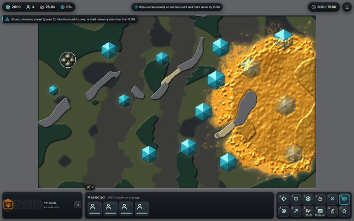
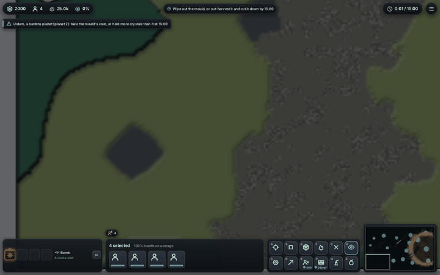

<title>Fire, Round Two</title>
<meta name="claude:viewport-fit-sides" content="cover">
<link rel="stylesheet" href="https://fonts.googleapis.com/css2?family=Inter:wght@400;600&family=Space+Grotesk:wght@500;700&display=swap">
<style>
/* Layout: one reading column, films full width with their numbers under each. */
:root {
  --bg: #f3f4f1; --fg: #1d221d; --muted: #5b645a; --line: #d5dad2; --accent: #c26a1a; --leaf: #3d5a46;
  --display: "Space Grotesk", "Segoe UI", system-ui, sans-serif;
  --body: "Inter", "Segoe UI", system-ui, sans-serif;
}
@media (prefers-color-scheme: dark) { :root:not([data-theme="light"]) { --bg: #121512; --fg: #e4e8e2; --muted: #9aa597; --line: #2b322b; --accent: #f0a050; --leaf: #8fb39a; color-scheme: dark } }
:root[data-theme="dark"] { --bg: #121512; --fg: #e4e8e2; --muted: #9aa597; --line: #2b322b; --accent: #f0a050; --leaf: #8fb39a; color-scheme: dark }
body { background: var(--bg); color: var(--fg); font-family: var(--body); line-height: 1.55; }
main { max-width: 760px; margin: 0 auto; padding-block: 32px 48px; padding-left: max(16px, env(safe-area-inset-left, 0px)); padding-right: max(16px, env(safe-area-inset-right, 0px)); display: grid; gap: 28px; }
h1, h2 { font-family: var(--display); text-wrap: balance; margin: 0; }
h1 { font-size: 2rem; }
h2 { font-size: 1.25rem; }
p { margin: 0; max-width: 65ch; }
.eyebrow { text-transform: uppercase; letter-spacing: .08em; font-size: .75rem; color: var(--leaf); font-weight: 600; }
section { display: grid; gap: 10px; }
figure { margin: 0; display: grid; gap: 8px; }
figure img { width: 100%; height: auto; border-radius: 6px; border: 1px solid var(--line); }
figcaption { color: var(--muted); font-size: .9rem; }
.counts { display: grid; grid-template-columns: repeat(auto-fit, minmax(140px, 1fr)); gap: 8px 16px; font-variant-numeric: tabular-nums; }
.counts div { display: grid; gap: 2px; border-top: 1px solid var(--line); padding-top: 6px; }
.counts b { font-family: var(--display); font-size: 1.15rem; color: var(--accent); }
.counts span { font-size: .8rem; color: var(--muted); }
ul { margin: 0; padding-left: 20px; display: grid; gap: 4px; }
</style>
<main>
  <header style="display:grid;gap:8px">
    <div class="eyebrow">Larder World · plants thread · 2026-11-14</div>
    <h1>Fire, Round Two</h1>
    <p>Your notes from 19:18 and 19:26: fire 5x slower, patchy and not a wavefront, burning on in places and going out in others, driven by a moisture field that follows water and biome, hurting soldiers, and looking better. Every flame, ember and scorch mark here is the fire's own heat field, filmed in the game on software Vulkan.</p>
  </header>

  <section>
    <h2>Planet 2, whole map</h2>
    <figure>
      
      <figcaption>Planet 2 seed 1 (Barrens) with the level generator's own plants, one frame per game second for 60 s. Two bombs land at 3 s, one in the jungle and one in the meadow, and a third goes off near the squad at 20 s. The squad stands idle.</figcaption>
    </figure>
    <div class="counts">
      <div><b>4 of 4</b><span>soldiers alive at 60 s (the 20 s bomb landed about 20 cells away)</span></div>
      <div><b>25,000 → 31,095</b><span>slime from 1 s to 60 s</span></div>
    </div>
  </section>

  <section>
    <h2>Close up at zoom 12</h2>
    <figure>
      
      <figcaption>The same run from 1 to 45 s at zoom 12. The flames are drawn per pixel from the smooth heat field in three crisp layers: deep red-orange, orange, and a yellow core where it is hottest. Each cell's heat flickers step by step, the band dims behind the front as the plants burn, and damp patches don't burn.</figcaption>
    </figure>
  </section>

  <section>
    <h2>How it behaves now</h2>
    <ul>
      <li><b>Speed.</b> On a strip of dry meadow, the front reached 11 cells at 10 s and 23 cells at 20 s. The first cut reached 50 and 100, a speed of 5 cells a second.</li>
      <li><b>Moisture.</b> At moisture 0.4 the front reached 6 cells at 10 s, and at 0.6 it reached 4. At 0.8 nothing burned. Damp cells catch less often, burn slower and cooler, and go out by chance, leaving unburnt patches.</li>
      <li><b>Where moisture comes from.</b> Each planet has a base and a spread for its biome, agreed with the level generator (for example Fen 0.5, River valley 0.3, Barrens 0.0). It is wetter within 8 cells of water or deep water, wetter in jungle and drier in scrub.</li>
      <li><b>Shots.</b> A blast lights a few sparks (12% of the cells out to a cell past its crater), not a ring of fire on every hit. A scorch round lights 40% of its disc.</li>
      <li><b>Soldiers.</b> A soldier standing in fire loses 25 health a second at full heat, so about 4 s in the hottest flames kills.</li>
      <li><b>Slime.</b> Thick slime still doesn't burn, so fire takes the slime's thin edge, not its body.</li>
      <li><b>GPU match and cost.</b> The GPU matches the CPU exactly: plants, fire, char, kills, and the heat under a soldier. The llvmpipe frame on planet 2 is 58.8 ms at the median. The GTX 1070 has not been timed yet.</li>
    </ul>
  </section>
</main>
